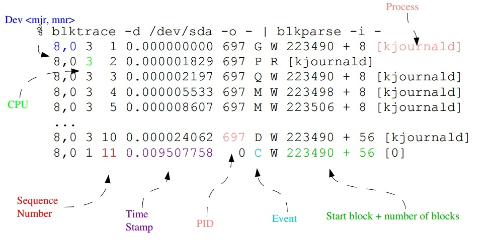
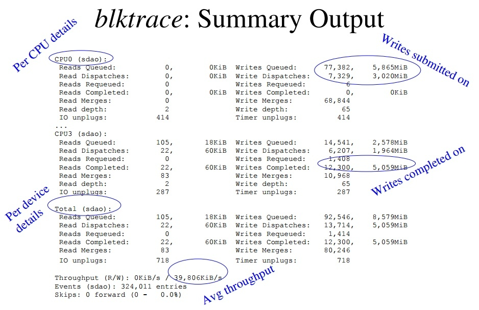

blktrace and btt
Table of Contents
Overview
blktrace
blktrace is a block layer IO tracing mechanism which provides detailed information about request queue operations up to user space. There are three major components that are provided:1
- Kernel patch A patch to the Linux kernel which includes the kernel event logging interfaces, and patches to areas within the block layer to emit event traces. If you run a 2.6.17-rc1 or newer kernel, you don't need to patch blktrace support as it is already included.
- blktrace A utility which transfers event traces from the kernel into either long-term on-disk storage, or provides direct formatted output (via blkparse).
- blkparse A utility which formats events stored in files, or when run in live mode directly outputs data collected by blktrace.

Install in the Ubuntu:
sudo apt-get install blktrace
btt
btt is a post-processing tool for the block layer IO tracing tool called blktrace.2
blktrace - live
$ sudo blktrace -d /dev/sda -o - | blkparse -i - 8,0 0 1 0.000000000 0 C W 913535800 + 8 [0] ^C 8,0 0 0 0.000009305 0 m N cfq414A / complete rqnoidle 0 8,0 0 0 0.000011612 0 m N cfq414A / set_slice=10 8,0 0 2 0.004117784 0 C W 583762824 + 8 [0] 8,0 0 0 0.004125949 0 m N cfq414A / complete rqnoidle 0 8,0 0 0 0.004127065 0 m N cfq schedule dispatch CPU0 (8,0): Reads Queued: 0, 0KiB Writes Queued: 1, 4KiB Read Dispatches: 0, 0KiB Write Dispatches: 1, 4KiB Reads Requeued: 0 Writes Requeued: 0 Reads Completed: 0, 0KiB Writes Completed: 7, 64KiB Read Merges: 0, 0KiB Write Merges: 0, 0KiB Read depth: 0 Write depth: 3 IO unplugs: 0 Timer unplugs: 0 CPU1 (8,0): Reads Queued: 0, 0KiB Writes Queued: 13, 52KiB Read Dispatches: 0, 0KiB Write Dispatches: 3, 52KiB Reads Requeued: 0 Writes Requeued: 0 Reads Completed: 0, 0KiB Writes Completed: 0, 0KiB Read Merges: 0, 0KiB Write Merges: 10, 40KiB Read depth: 0 Write depth: 3 IO unplugs: 3 Timer unplugs: 0 CPU2 (8,0): Reads Queued: 0, 0KiB Writes Queued: 2, 8KiB Read Dispatches: 0, 0KiB Write Dispatches: 2, 8KiB Reads Requeued: 0 Writes Requeued: 0 Reads Completed: 0, 0KiB Writes Completed: 0, 0KiB Read Merges: 0, 0KiB Write Merges: 0, 0KiB Read depth: 0 Write depth: 3 IO unplugs: 2 Timer unplugs: 0 Total (8,0): Reads Queued: 0, 0KiB Writes Queued: 16, 64KiB Read Dispatches: 0, 0KiB Write Dispatches: 6, 64KiB Reads Requeued: 0 Writes Requeued: 0 Reads Completed: 0, 0KiB Writes Completed: 7, 64KiB Read Merges: 0, 0KiB Write Merges: 10, 40KiB IO unplugs: 5 Timer unplugs: 0


btt
Life of an I/O
- Q2I – time it takes to process an I/O prior to it being inserted or
merged onto a request queue
- Includes split, and remap time
- I2D – time the I/O is “idle” on the request queue
- D2C – time the I/O is “active” in the driver and on the device
- Q2I + I2D + D2C = Q2C
- Q2C: Total processing time of the I/O
example
$ sudo blktrace -d /dev/sda -o trace $ sudo blkparse -i trace.blktrace.* -d bp.bin $ sudo btt -i bp.bin ==================== All Devices ==================== ALL MIN AVG MAX N --------------- ------------- ------------- ------------- ----------- Q2Q 0.000000512 0.075284631 3.621596442 50 Q2G 0.000000484 0.000002260 0.000005593 128 G2I 0.000000703 0.000008510 0.000027124 128 Q2M 0.000000118 0.000000300 0.000001363 280 I2D 0.000002720 0.004435186 0.036127898 128 M2D 0.000004195 0.000020769 0.000046418 280 D2C 0.000207589 0.000552830 0.001529258 51 Q2C 0.000237979 0.001962099 0.036369971 51 ==================== Device Overhead ==================== DEV | Q2G G2I Q2M I2D D2C ---------- | --------- --------- --------- --------- --------- ( 8, 0) | 0.2891% 1.0885% 0.0838% 567.3235% 28.1754% ---------- | --------- --------- --------- --------- --------- Overall | 0.2891% 1.0885% 0.0838% 567.3235% 28.1754% ==================== Device Merge Information ==================== ....